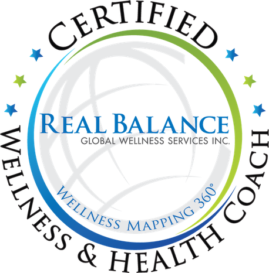

Hi, I'm Natalia
BA (Hons), Dip CNM, mBANT
I'm a Registered Nutritional Therapist and Wellness Coach. I work online with women who feel tired, out of balance and not quite themselves. Together we look at what may be behind it and build habits that last, without restrictive diets.
Book a free 20-minute callMy story
Knowing what to do is only half of it. The other half is making it work in a real, busy week.
My family has a history of gut problems, and in my 20s they started for me too. Bloating, brain fog, foods that didn't agree with me, skin flare-ups, difficult cycles, catching every bug going. I had it all.
I tried one approach after another and felt hopeless. Nothing looked at the whole picture, and I wasn't listening to my body. What helped most was not another rule. It was finally understanding how food, stress and sleep work together in my own body, and what may be behind how I felt.
That is why I trained as a nutritional therapist, and then as a wellness coach. I start with food and look at the whole picture: stress, sleep and daily habits too. Knowing what to do is only half of it. The other half is making it work in a real, busy week.
The women I work with often tell me a story like mine: tired, bloated, overwhelmed by advice, and quietly blaming themselves. I've been there. With me, you won't be judged, and you won't have to work it out alone.
How I work
What I believe
-
You are resourceful and whole.
I believe every woman is naturally resourceful and whole, not a problem to be solved. As your coach, I'm an ally: I support you and ask the questions, and the decisions stay yours.
-
You know your life best.
I bring the nutrition knowledge; you know what will work in your week. We write the plan together.
-
Understanding comes first.
I explain why each change matters, so you can make good choices on your own.
-
Small steps that last.
One change you keep is worth more than ten you drop.
-
No judgement, no guilt.
A hard week is part of it. We pick it up again from there.
-
Alongside your GP.
If you have a medical condition, I work alongside your GP's care, not instead of it.
Credentials
Training and memberships
Training
Wellness & Health Coach
Real Balance Global Wellness Services
2026
Masterful Health and Wellness Coaching
Real Balance Global Wellness Services
2025
Clinic Assistant Supervisor training
College of Naturopathic Medicine
2025
Nutritional Therapy
College of Naturopathic Medicine
2024
Integrated Nutrition and Homeopathy
The College of Integrated Nutrition and Homeopathy
2021
BA (Hons) Sociology
University of Salford
2014
Professional memberships
2026
2026

Outside work
A little more about me
When I'm not working, you'll find me outdoors: hiking, walking, or by the ocean, which always leaves me inspired and full of energy. I love a good sci-fi film, and I'm curious about what might be out there. I also have a soft spot for reality shows, because seeing how people handle stress shows so much about human nature.
Psychology and relationships fascinate me, and I like living in tune with the moon's cycles. But common sense always wins.
Would you like to work together?
Book a free 20-minute call. We'll talk about what's going on and see if we're a good fit, with no obligation to book.
Book a free 20-minute call